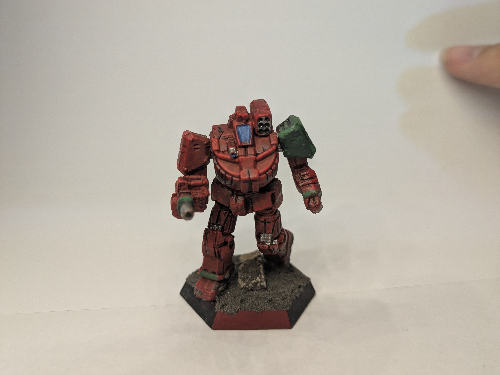
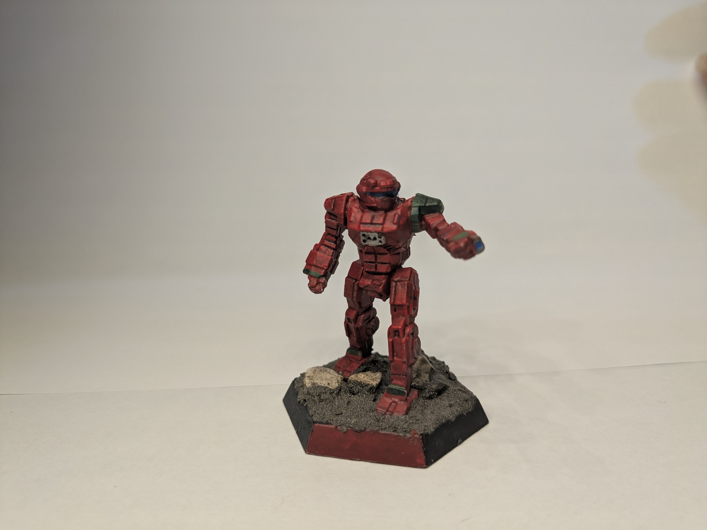
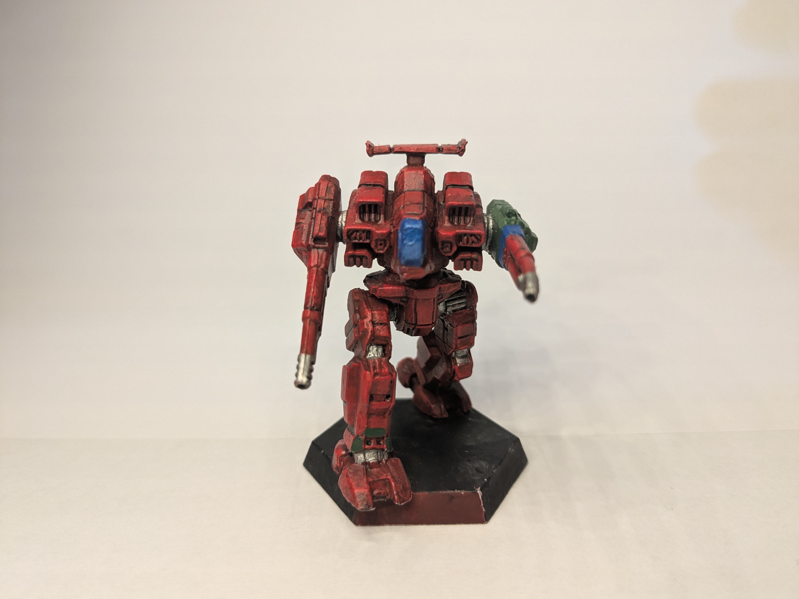
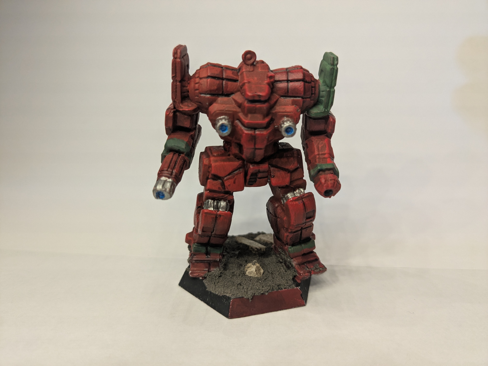

Colonel Alize
The relativly new leader of the Crimson Iris. She pilots a Wolverine, a medium sized mech, a reliable mech that is easy to maintain and contains a command module. Alize is considered a rather odd individual, being extremly blunt in most social situations, to the point some speculate she has practically no experiance talking with people. This rumor is further enhanced by the fact no one really knows where she came from, she simply showed up one day, being a key ally to the Crimson Iris for several months. When the collapse of the orginal company happened, she swooped in, gathered the surivovrs, and forged the company a new.
Major Derrel
The ever reliable 2nd in command of the company. Derrel pilots the Commando, a light sized mech, what it lacks in speed, it makes up for in the fact it punches above its weight class when it comes to fire power. Of all the command staff, Derrel is the most experianced, having more seniority then Alize, by almost a year. Despite this fact, he did not pursue a leader role, being content in being a right hand man. He is known for his laid back personality and his trickster like tactics.
Captain Royce
The newest of the command staff in the Crimson Iris. Royce pilots the ever reliable Rifleman, a mech that is a good all 'rounder, able to dish out a decent hit while taking blows in return. Royce is even more laid back then Derrel, being overly friendly and wearing his emotions on his sleeve. Among the company, he has gained the name "leadeater" due to his habit of consuming a niche gum brand known for its almost metalic appearance.
Master SPC Kiwior
The most veteran of the standard soldiers. Kiwior pilots the venerable Awesome, its slow, its heavy, but it packs a devastantingly strong punch, little other mechs (pre clan anyways) could match its firepower. Kiwior is rather eccentric, carrying an almost child like wonder in her day to day life, almost always yelling, and being extremly friendly. Many officers find its difficult to issue orders to her, as she often only listens to either her best friend, or Colonel Alize herself.